Chapter 2: The Processing Language
If you are not familiar with the Processing language, read on this chapter for an introduction to the creation of 2-D shapes, use of geometry transformations and color, and handling touchscreen input. The chapter ends with a step-by-step example of a drawing sketch, which we will use in chapter 3 to learn how to export and upload an app created with Processing to the Play Store.
A programming sketchbook for artists and designers
As we learned in the first chapter, the Processing language, in conjunction with the PDE, makes it easier for users who are new to programming to start creating interactive graphics. The language has been designed to be minimal and simple for learning and yet expressive enough to create code-based projects in diverse fields: generative art, data visualization, sound art, film, performance, etc. It includes around 200 functions across different categories: drawing, interaction, typography, etc., as well as several classes that help with the handling of form, color, and data.
We can also see Processing as a “coding sketchbook”, analogous to a paper sketchbook that we use to quickly draft and refine ideas. An important part of this analogy is that, as with the paper sketchbook, Processing gives us the possibility of obtaining visual feedback from the code as quickly as possible is an essential feature of Processing. The next section describes the basic structure in Processing that allows us go easily generate animated output on the screen.
The setup/draw structure of a Processing sketch
In most cases, we need our Processing sketches to run continuously in order to animate graphics on the screen and keep track of user input. We can implement such interactive sketches using a basic code structure where we first carry out all initialization operations inside a setup() function, and then run a draw() function every time Processing needs to render a new frame.
With this structure, we can create an animation that is updated a fixed number of times per second, 60 by default. In each call of the draw() function, we need not only draw the visual elements that form our composition, but also perform all the calculations needed to update the composition. For example, in Listing 2-1, we draw a vertical line moving horizontally across the screen from left to right using the function line(x, 0, x, height). The horizontal position of the line is the contained in the variable x, which we update in every frame with x = (x + 1) % width. In this line of code, we increment x by 1, and then calculate the result modulo the screen width. Since “a modulo b” is defined as the remainder of the integer division of a by b (for example 9 % 4 is 1), the result can only be a number between 0 and b-1. Hence, x in our sketch cannot be smaller than 0 nor greater than the width-1, which is exactly what we need: x increments in 1 unit at the time, and wraps back to 0 after reaching the right edge. The output of this sketch is shown in Figure 2-1.
Listing 2-1. A sketch that draws a vertical line moving horizontally across the screen
int x = 0;
void setup() {
size(600, 200);
strokeWeight(2);
stroke(255);
}
void draw() {
background(50);
line(x, 0, x, height);
x = (x + 1) % width;
}
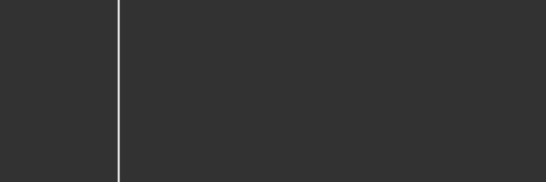
Figure 2-1. Output of the animated line sketch
Processing calls the draw() function at a default frame rate of 60 frames per second, however, we can change this default using the function frameRate(int fps). For instance, if we add adding frameRate(1) in setup(), then the sketch will draw 1 frame per second.
Sometimes, we may need to stop Processing from running its animation after a number of frames. We can use the noLoop() and loop() functions to stop and resume the animation, respectively. Processing has a “boolean” (logical) variable named looping which is true or false depending on whether or not the sketch is running the animation loop. We can add a simple keystroke detection to our previous code to stop/resume the sketch, which is implemented in Listing 2-2:
Listing 2-2. Pausing/resuming the animation loop
int x = 0;
void setup() {
size(600, 200);
strokeWeight(2);
stroke(255);
}
void draw() {
background(50);
line(x, 0, x, height);
x = (x + 1) % width;
}
void keyPressed() {
if (looping) {
noLoop();
} else {
loop();
}
}
In addition to these interactive sketches, we can also create “static” sketches without setup/draw, which are typically useful if we are only want to generate a fixed composition that does not need to be updated. Processing runs the code in these sketches only one time. Listing 2-3 contains a simple static sketch that draws the white circle in Figure 2-2.
Listing 2-3. Static sketch without setup() and draw() functions
size(200, 200);
ellipse(100, 100, 150, 150);
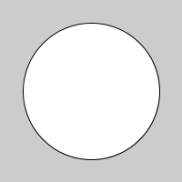
Figure 2-2. Output of the static sketch
Drawing with code
The examples from the previous section point to some important concepts in code-based drawing. First, we need to specify the coordinates of the elements we want to draw on the screen, second, there are functions, such as line(), that allow us to draw various graphical primitives or shapes by setting the appropriate numerical values that define the shapes, and third, we can set the visual “style” of these shapes (e.g.: stroke color and weight).
In Processing, we can draw shapes of different kinds (points, lines, polygons) and with certain attributes (stroke weight and color, fill color, etc.) These attributes can be thought as “style parameters” that once they are set, affect everything drawn afterwards. For example, each circle in Listing 2-4 has a different fill color, but if we comment out the second fill() call, then the first and second circles will be red, since the fill color set at the beginning affects the first two ellipse calls. Figure 2-3 shows the output of this sketch in these situations.
Listing 2-4. Setting style attributes
size(460, 200);
strokeWeight(5);
fill(255, 0, 0);
stroke(0, 255, 0);
ellipse(100, 100, 200, 200);
fill(255, 0, 200); // Comment this line out to make second circle red
stroke(0);
ellipse(250, 100, 100, 100);
fill(0, 200, 200);
ellipse(380, 100, 160, 160);
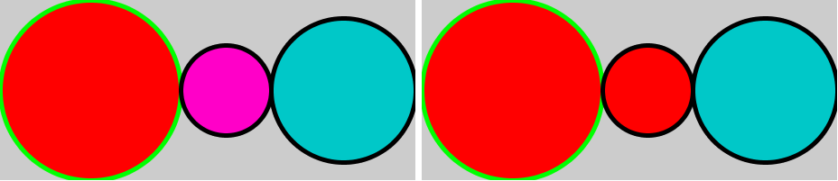
Figure 2-3. Effect of the calling order of style functions
Screen coordinates
Processing draws its graphical output into a rectangular grid of pixels, numbered from 0 to width – 1 along the horizontal direction (the X axis), and 0 to height – 1 along the vertical direction (the Y axis), as illustrated in Figure 2-4. This grid will be contained in a separate output window when running the code in the Java mode, or centered in the device’s screen when using the Android mode.

Figure 2-4. Diagram of the screen’s pixels
When drawing with Processing, we need to keep in mind that X coordinates run from left to right, while the Y coordinates run from top to bottom. So, the pixel (0, 0) represents the upper left corner of the screen, and the pixel (width-1, height-1) represents the lower right corner. The arguments of most of the 2-D drawing functions in Processing refer to the pixel coordinates of the screen. For example, the following sample code would produce the output in Figure 2-5 (where each square represents a single pixel for clarity):
stroke(200, 0, 0);
fill(100, 200, 100);
rect(2, 1, width – 1, height - 2);
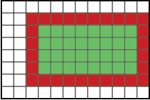
Figure 2-5. Pixels covered by a stroked rectangle in Processing
We should size the shapes we draw with Processing according to the constraints of our screen size. In general, it is recommended to use the width and height internal variables when referring to the size of the screen instead of the actual values, in this way we can readjust the size without having to modify the drawing code, as it is done in Listing 2-5.
Listing 2-5. Using screen coordinates
size(800, 800);
stroke(0);
fill(180);
background(97);
line(width/2, 0, width/2, height);
line(0, height/2, width, height/2);
rect(0, 0, 200, 200);
rect(width - 200, 0, 199, 200);
rect(width - 200, height - 200, 199, 199);
rect(0, height - 200, 199, 199);
rect(200, 200, width - 400, height - 400);
In this code, some rectangles have an unusual width/height of 199. This is so the stroke lines on the outer border of the screen are visible since, as we just saw, the x coordinate of the last row/column of pixels are height-1/width-1. The sketch’s output, with all the outer strokes falling on the edge pixels, is shown in Figure 2-6, as it would appear on a Nexus 5X phone. You can also notice that this output only occupies a screen-centered 800x800 square, since that’s the size we specified in the code. We will see later in this chapter how to use the entire screen and, in chapter 4, how to scale our graphics according to the device’s resolution.
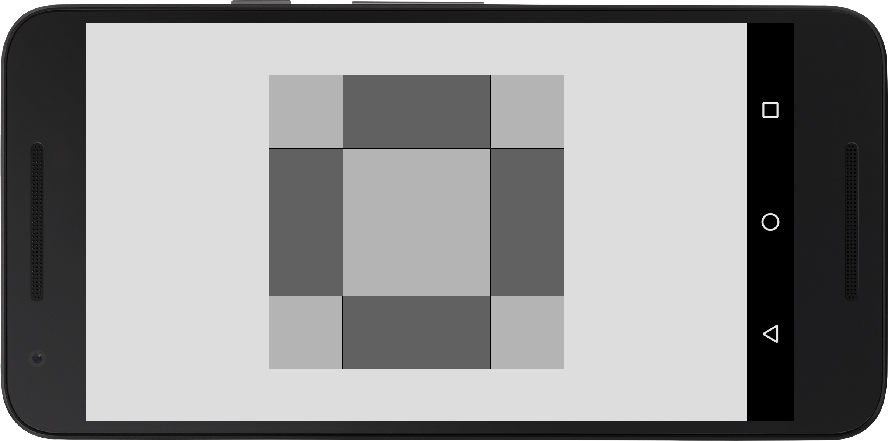
Figure 2-6. Output of code Listing 2-5, on a Nexus 5X phone
Form
All visual forms we can generate with Processing are drawn as 2 or 3-dimensional shapes. Typically, we construct these shapes by explicitly specifying all the vertices that define their boundaries inside the beginShape() and endShape() functions, as shown in Listing 2-6 (and whose output is presented in Figure 2-7):
Listing 2-6. Using beginShape() and endShape()
size(600, 300);
beginShape(QUADS);
vertex(5, 250);
vertex(590, 250);
vertex(590, 290);
vertex(5, 290);
endShape();
beginShape();
vertex(30, 25);
vertex(90, 90);
vertex(210, 10);
vertex(160, 120);
vertex(210, 270);
vertex(110, 180);
vertex(10, 270);
vertex(60, 150);
endShape(CLOSE);
beginShape(TRIANGLES);
vertex(50, 30);
vertex(90, 75);
vertex(110, 30);
endShape();
ellipse(470, 80, 70, 70);
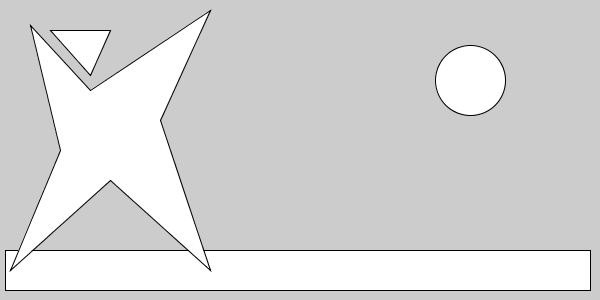
Figure 2-7. Composition created with several shapes
Even though we did not use beginShape/endShape in our first examples, where we created primitive shapes with the built-in functions ellipse() and rect(), these are nothing more that short-hand calls for their corresponding beginShape/endShape calls. We can in fact create other type of primitive shapes types using
beginShape(int kind)
, where the kind argument indicates the desired primitive. For example, in Listing 2-7, we construct a regular polygon with a fan of triangles spanning from a central vertex:Listing 2-7. Creating a triangle fan
size(300, 300);
int numTriangles = 10;
beginShape(TRIANGLE_FAN);
vertex(width/2, height/2);
for (int i = 0; i <= numTriangles; i++) {
float a = map(i, 0, numTriangles, 0, TWO_PI);
float x = width/2 + 100 * cos(a);
float y = height/2 + 100 * sin(a);
vertex(x, y);
}
endShape();
In this example, we use a for loop to iterate over the number of divisions of the triangle fan. Processing, as an extension of the Java language, inherits all the control structures from Java, which we need for algorithmic drawing. Also, notice the use of the function map(), which is part of the Processing API. This function is very useful and allows us to convert a numeric value within a range to the corresponding value in a different range. In this case, the index i varies between 0 and numTriangles, and we want to transform it into an angle between 0 and 2π.
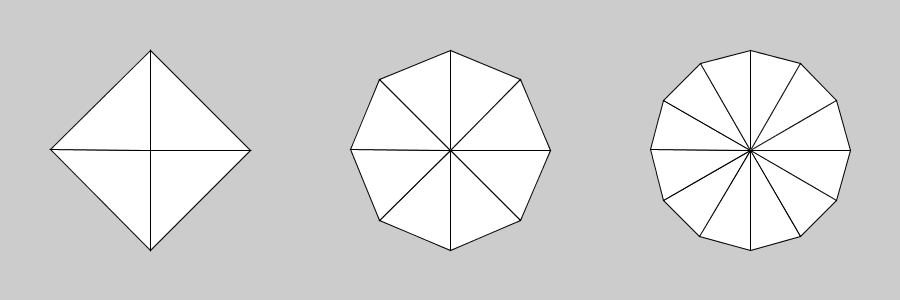
Figure 2-8. Outputs of the triangle fan example for different number of vertices
Other kind of primitive shapes are TRIANGLE_STRIP, QUAD_STRIP, LINES and POINTS, which are all fully documented in Processing’s reference. For instance, QUAD_STRIP becomes handy when one needs to create a rectangular grid, or a hollowed-out circle like we do in Listing 2-8.
Listing 2-8. Creating a quad strip
size(300, 300);
beginShape(QUAD_STRIP);
int numQuads = 10;
for (int i = 0; i <= numQuads; i++) {
float a = map(i, 0, numQuads, 0, TWO_PI);
float x0 = width/2 + 100 * cos(a);
float y0 = height/2 + 100 * sin(a);
float x1 = width/2 + 130 * cos(a);
float y1 = height/2 + 130 * sin(a);
vertex(x0, y0);
vertex(x1, y1);
}
endShape();
By adjusting the value of the numQuads variable, we can obtain geometries of increasing detail, as seen in Figure 2-9:
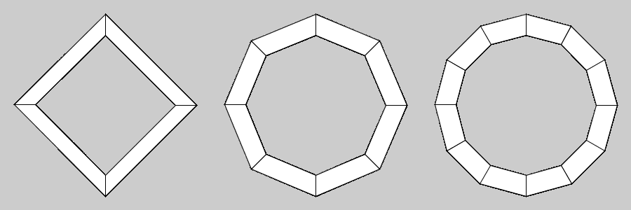
Figure 2-9. Quad strip example with different values for numQuads
However, often times we need create more complex shapes, such as curves. Even though we could calculate the vertices along the curves manually, Processing provides a number of functions that do precisely that for us, specifically for Catmull-Rom splines, quadratic and cubic Bezier curves. The bezierVertex() function, for instance, allows us to define a point on a cubic Bezier curve. It requires the anchor point the curve must pass through, and the control points defining the starting and ending directions. When starting a Bezier curve, the first anchor is set with a regular vertex() call, as shown in Figure 2-10:
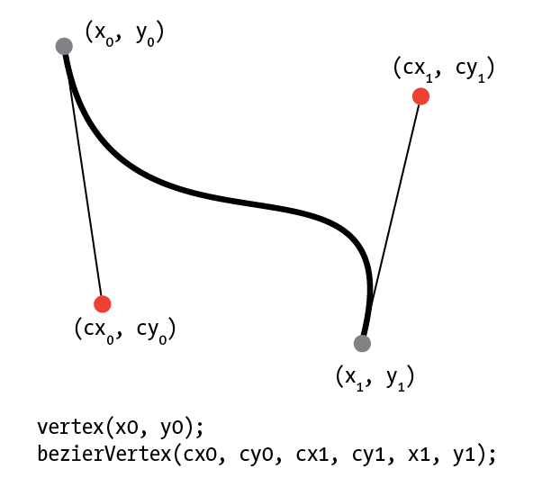
Figure 2-10. Parameters of the bezierVertex() function
We can combine several Bezier curves in a single shape in order to generate more complex figures, as shown in Listing 2-9.
Listing 2-9. Creating multi-lobed shape with Bezier curves
size(300, 300);
int numLobes = 4;
float radAnchor = 50;
float radControl = 150;
float centerX = width/2;
float centerY = height/2;
beginShape();
for (int i = 0; i < numLobes; i++) {
float a = map(i, 0, numLobes, 0, TWO_PI);
float a1 = map(i + 1, 0, numLobes, 0, TWO_PI);
float cx0 = centerX + radControl * cos(a);
float cy0 = centerY + radControl * sin(a);
float cx1 = centerX + radControl * cos(a1);
float cy1 = centerY + radControl * sin(a1);
float x0 = centerX + radAnchor * cos(a);
float y0 = centerY + radAnchor * sin(a);
float x1 = centerX + radAnchor * cos(a1);
float y1 = centerY + radAnchor * sin(a1);
vertex(x0, y0);
bezierVertex(cx0, cy0, cx1, cy1, x1, y1);
}
endShape();
By playing with the parameters in this sketch (number of lobes, radius of the anchor points, radius of the control points), we can obtain an entire family of shapes, some of which we can see in Figure 2-11:
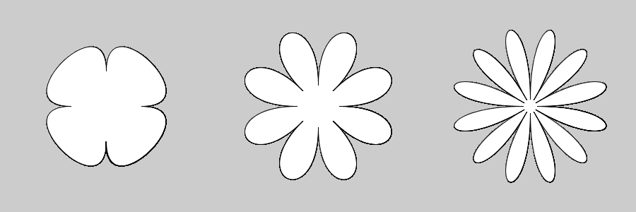
Figure 2-11. Family of multi-lobed shapes created with Bezier curves
Color
Color is another important component in visual design, and Processing provides numerous functions to set the color of the interior of shapes (the fill color) and their edges (the stroke color), in addition to the background color of the entire output screen.
By default, we can set colors using RGB (red, green, and blue) values between 0 and 255, as illustrated in the code of Listing 2-10, and its output in Figure 2-12.
Listing 2-10. Setting fill and stroke colors using RGB values
size(600, 300);
strokeWeight(5);
fill(214, 87, 58);
stroke(53, 124, 115);
rect(10, 10, 180, 280);
stroke(115, 48, 128);
fill(252, 215, 51);
rect(210, 10, 180, 280);
stroke(224, 155, 73);
fill(17, 76, 131);
rect(410, 10, 180, 280);
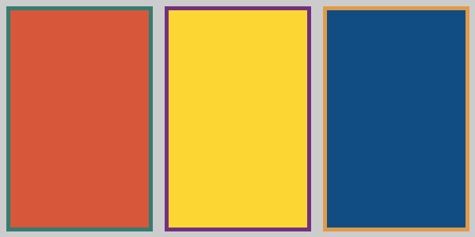
Figure 2-12. Output of setting stroke and fill RGB colors
Even though we can create almost any imaginable color using the RGB values, it can be hard to find the right combination of numbers for the color we need. Processing includes a handy Color Selector tool to help us to pick a color interactively, which we can then copy into our sketches as RGB values. The Color Selector is available, alongside any other installed tool, under the “Tools” menu in the PDE (Figure 2-13).
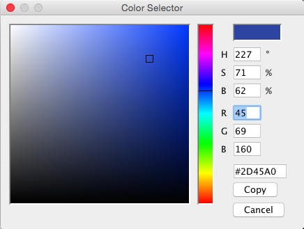
Figure 2-13. Color selector tool
We can also specify colors in the HSB (Hue, Saturation and Brightness) space. The HSB mode can be set with the colorMode() function, which also allow us to set the ranges for each component. In code Listing 2-11, we draw a color wheel by mapping the position around a circle to the color hue.
Listing 2-11. Drawing a color wheel using HSB values
size(300, 300);
colorMode(HSB, TWO_PI, 1, 1);
float centerX = width/2;
float centerY = height/2;
float maxRad = width/2;
strokeWeight(2);
stroke(0, 0, 1);
for (int i = 0; i < 6; i++) {
float r0 = map(i, 0, 6, 0, 1);
float r1 = map(i + 1, 0, 6, 0, 1);
beginShape(QUADS);
for (int j = 0; j <= 10; j++) {
float a0 = map(j, 0, 10, 0, TWO_PI);
float a1 = map(j + 1, 0, 10, 0, TWO_PI);
float x0 = centerX + maxRad * r0 * cos(a0);
float y0 = centerY + maxRad * r0 * sin(a0);
float x1 = centerX + maxRad * r1 * cos(a0);
float y1 = centerY + maxRad * r1 * sin(a0);
float x2 = centerX + maxRad * r1 * cos(a1);
float y2 = centerY + maxRad * r1 * sin(a1);
float x3 = centerX + maxRad * r0 * cos(a1);
float y3 = centerY + maxRad * r0 * sin(a1);
fill(a0, r0, 1);
vertex(x0, y0);
vertex(x1, y1);
vertex(x2, y2);
vertex(x3, y3);
}
endShape();
}
Let’s note a few important things in this example. First, we set the range for the hue to 2π, in order to make the transformation between indices and color more direct. Second, we use QUADS instead of QUAD_STRIP. The reason is that we would not be able to set separate colors for each quad in a strip, because they all share a common edge with the previous and next quad. Instead, in a QUADS shape, each quad is defined independently of the others and so can have different style attributes. Our final color wheel is shown in Figure 2-14.
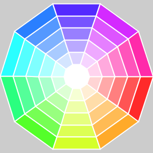
Figure 2-14. Output of HSB color wheel example
Geometric transformations
So far, we have seen how to construct shapes and pick their colors. In addition to all of this, we also need to be able to move them around and chance their size by applying translations, rotations, and scaling transformations (Figure 2-15).
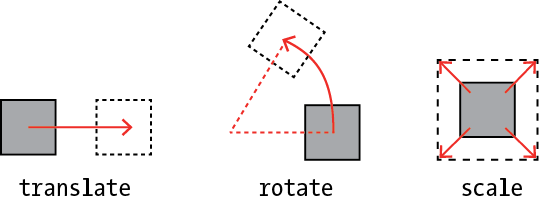
Figure 2-15. The three types of geometric transformations
While the ideas of translation, rotation, and scaling are intuitive, it is harder to anticipate the effect of several consecutive transformations. It can help us thinking about transformations to imagine that a transformation actually affects the coordinate axis after it has been applied. For instance, if we apply a translation of 20 units along the X-axis and 30 units along the Y-axis, then a subsequent rotation will occur around the point (20, 30). Conversely, if the rotation is applied first, the axes will then be rotated and a translation will occur along the rotated axes. As a consequence, if we draw a shape at the end of this chain of transformations, its final positon may be different depending on their order (Figure 2-16).
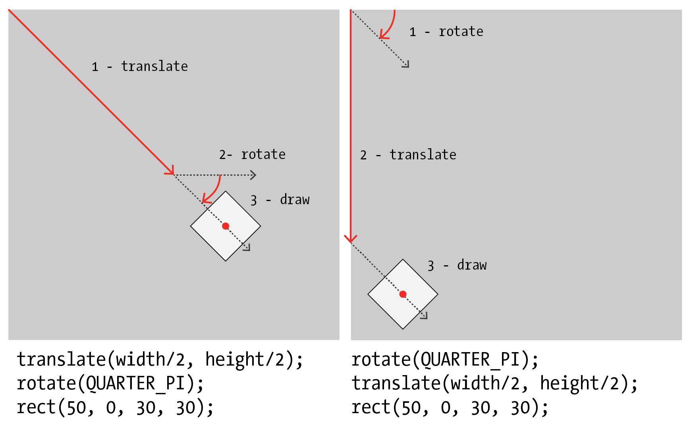
Figure 2-16. Geometric transformations cannot be exchanged
We can save the current transformation “state” with the pushMatrix() function, and restore it with the corresponding popMatrix() function. We must always use these two functions in pairs, and allow us to create complex relative movements by setting transformations only to specific subsets of the shapes. For example, Listing 2-12 generates an animation of an ellipse and square rotating around a larger square placed at the center of the screen, with the smaller square also rotating around its own center. Figure 2-17 shows a snapshot of this animation.
Listing 2-12. Using pushMatrix() and popMatrix()
void setup() {
size(400, 400);
rectMode(CENTER);
noStroke();
}
void draw() {
background(170);
translate(width/2, height/2);
rotate(angle);
rect(0, 0, 100, 100);
pushMatrix();
translate(150, 0);
rotate(2 * angle);
scale(0.5);
rect(0, 0, 100, 100);
popMatrix();
translate(0, 180);
ellipse(0, 0, 30, 30);
angle += 0.01;
}
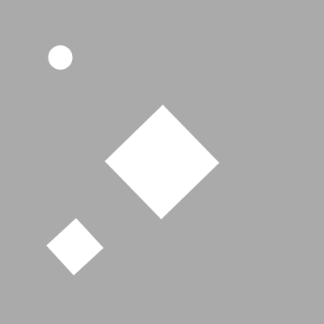
Figure 2-17. Using pushMatrix() and popMatrix() to keep transformations separate
Responding to user input
Keyboard and touchscreen input (among other options) allows us to enter information into the sketch in order to control its behavior. Since the user can touch the screen or press a key at any moment, not necessarily when Processing is drawing a frame, we need a way to retrieve this information no matter what stage of drawing we are in our sketch.
Processing provides several built-in variables and functions to handle user input. The variables mouseX and mouseY give us the current position of the mouse when working in the Java mode. These variables are still available in the Android mode, although mobile devices do not usually have a mouse. In this case, they just represent the position of the first touch point on the screen (Processing also supports multi-touch interaction, which is covered in chapter 5). Both mouseX/Y are complemented with mousePressed, which indicates whether or not the mouse/touchscreen is being pressed. Using these variables, we can create a simple drawing sketch with very little code, like the one in Listing 2-13. Its output on a phone would look like in Figure 2-18. Since the width and height set with the size() function is smaller than the screen resolution, we see the output area surrounded by a light background we cannot draw to. However, we can use the entire screen if instead of initializing the sketch with size(width, height), we use the fullScreen() function. This also has the advantage of hiding the status bar at the top of the screen, and the navigation bar at the bottom.
Listing 2-13. A free-hand drawing sketch using circles
void setup() {
size(1000, 500);
noStroke();
fill(255, 100);
}
void draw() {
if (mousePressed) {
ellipse(mouseX, mouseY, 50, 50);
}
}
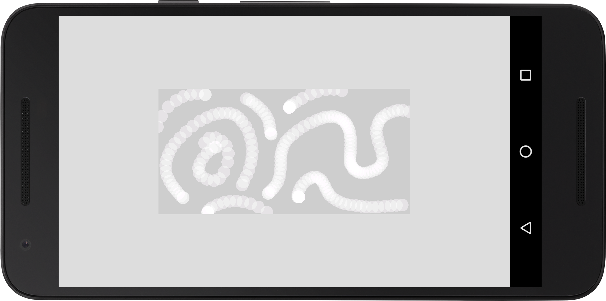
Figure 2-18. Drawing with ellipses
While mouseX/Y stores the current position of the mouse/touch, Processing also provides the variables pmouseX and pmouseY, which store the previous position. By connecting the pmouseX/Y coordinates with the current ones in mouseX/Y, we are able to draw continuous lines that follow the movement of the pointer. Listing 2-14 illustrates this technique, and also uses fullScreen() so we can draw on the entire screen surface, as seen in Figure 2-19.
Listing 2-14. Another free-hand drawing sketch
void setup() {
fullScreen();
}
void draw() {
if (mousePressed) {
line(pmouseX, pmouseY, mouseX, mouseY);
}
}
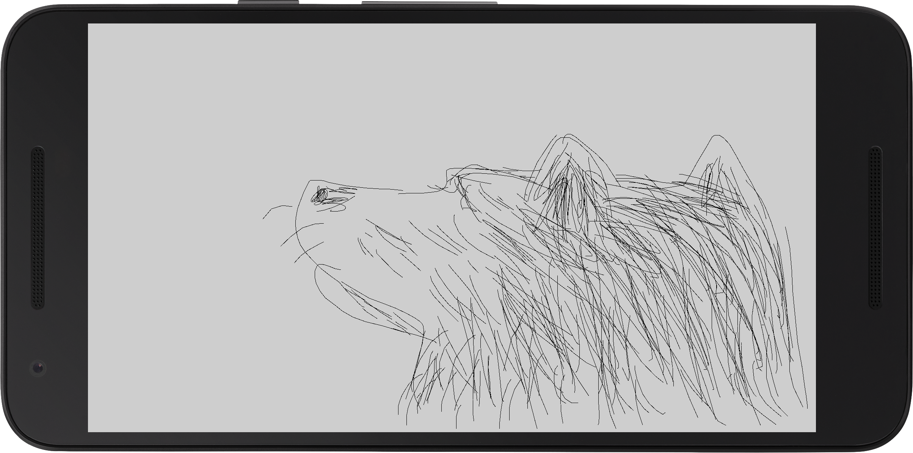
Figure 2-19. Output of our simple drawing sketch, in full screen mode
Creating a “vine drawing” app
Our goal in this final section is to code a drawing app that incorporates algorithmic shapes into the hand-drawn lines. One possibility is to augment the scaffold provided by the lines with shapes that resemble growing vegetation, vines, leaves, and flowers. The Bezier curves we learned about earlier could be used to generate organic-looking shapes. Some sketching with pen and paper (Figure 2-20) may also help us to try out some visual ideas:

Figure 2-20. Sketches for the vine drawing app
We can build on top of our previous sketches. One thing we were missing before is some degree of “randomness” in both form and color. The random(float a, float b) function in Processing allow us to draw random numbers between a and b, which we can use in the leaf/flower shapes constructed via the bezierVertex() function. In Listing 2-15, we apply the random function to introduce variation in the color and also in the number of lobes of our shapes, and Figure 2-21 shows the output of this sketch for three separate runs.
Listing 2-15. Generating randomized flowers/leafs with Bezier Curves
void setup() {
size(600, 160);
frameRate(1);
}
void draw() {
background(180);
drawFlower(100, 80);
drawFlower(300, 80);
drawFlower(500, 80);
}
void drawFlower(float posx, float posy) {
pushMatrix();
translate(posx, posy);
fill(random(255), random(255), random(255), 200);
beginShape();
int n = int(random(4, 10));
for (int i = 0; i < n; i++) {
float a = map(i, 0, n, 0, TWO_PI);
float a1 = map(i + 1, 0, n, 0, TWO_PI);
float r = random(10, 100);
float x = r * cos(a);
float y = r * sin(a);
float x1 = r * cos(a1);
float y1 = r * sin(a1);
vertex(0, 0);
bezierVertex(x, y, x1, y1, 0, 0);
}
endShape();
popMatrix();
}
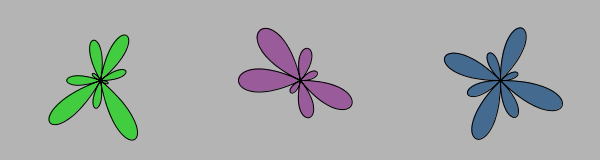
Figure 2-21. Output of the flower/leaf sketch
In addition to the flowers/leaves, we can add some additional elements, for instance a growing “spiral” branch that finishes in a fruit. Spirals have a parametric formula (https://www.khanacademy.org/tag/parametric-equations) of the form x(t) = r(t) cos(a(t)), y(t) = r(t) sin(a(t)), where the parameter t goes from 0 to 1 and controls the “growth” the curve. After tweaking with the radial function, I reached a satisfactory growth behavior with r(t) = 1/t, so we can start with the code in Listing 2-16 to draw a single spiral (Figure 2-22).
Listing 2-16. Drawing a spiral using parametric equations
size(300, 300);
noFill();
translate(width/2, height/2);
beginShape();
float maxt = 10;
float maxr = 150;
for (float t = 1; t < maxt; t += 0.1) {
float r = maxr/t;
float x = r * cos(t);
float y = r * sin(t);
vertex(x, y);
}
endShape();
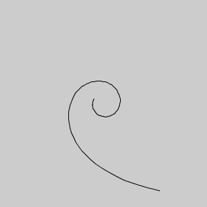
Figure 2-22. Output of our spiral parametric equation sketch
The number of turns is controlled by the maximum value of the parameter t, while the maximum radius determines how much the spiral extends outwards. These two parameters will give us some visual variation. One issue is that we will need the stem of the spiral to be aligned with the direction of the line drawing. We can orient the spiral along a desired angle direction by rotating by the angle plus 180 degrees (π). This is what we do in Listing 2-17, with three different spirals generated by it in Figure 2-23.
.Listing 2-17. Drawing a spiral using parametric equations
void setup() {
size(600, 160);
frameRate(1);
}
void draw() {
background(180);
drawSpiral(100, 80, 0);
drawSpiral(300, 80, QUARTER_PI);
drawSpiral(500, 80, PI);
}
void drawSpiral(float posx, float posy, float angle) {
pushMatrix();
translate(posx, posy);
rotate(angle + PI);
noFill();
beginShape();
float maxt = random(5, 20);
float maxr = random(50, 70);
float x0 = maxr * cos(1);
float y0 = maxr * sin(1);
for (float t = 1; t < maxt; t += 0.1) {
float r = maxr/t;
float x = r * cos(t) - x0;
float y = r * sin(t) - y0;
vertex(x, y);
}
endShape();
popMatrix();
}
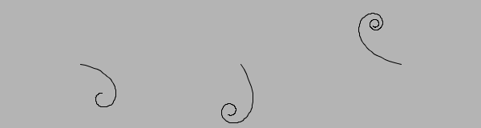
Figure 2-23. Output of the randomized spirals sketch
We can now put together all these elements in a simple drawing app that adds leaves, vines, and fruits to the hand-drawn line (Listing 2-18). Leaves and vines are randomly added when the mouse/touchscreen is pressed with a probability of 0.05 (so slowly moving lines will have more vegetation). The angle of the spiral vines to the last line segment is calculated by constructing a PVector object from the difference between the current and last mouse/touch positions. PVector is a built-in class in Processing to handle 2D and 3D vectors. This class contains several utility functions, one of which give us the heading angle of the vector, that is, the angle of the vector along the X-axis. Figure 2-24 shows a drawing made with this app.
Listing 2-18. Full vine drawing sketch
void setup() {
fullScreen();
noFill();
colorMode(HSB, 360, 99, 99);
strokeWeight(2);
stroke(210);
background(0, 0, 99);
}
void draw() {
if (mousePressed) {
line(pmouseX, pmouseY, mouseX, mouseY);
if (random(1) < 0.05) {
PVector dir = new PVector(mouseX - pmouseX, mouseY - pmouseY);
float a = dir.heading();
drawSpiral(mouseX, mouseY, a);
}
if (random(1) < 0.05) {
drawFlower(mouseX, mouseY);
}
}
}
void keyPressed() {
background(0, 0, 99);
}
void drawFlower(float xc, float yc) {
pushMatrix();
pushStyle();
noStroke();
translate(xc, yc);
fill(random(60, 79), random(50, 60), 85, 190);
beginShape();
int numLobes = int(random(4, 10));
for (int i = 0; i <= numLobes; i++) {
float a = map(i, 0, numLobes, 0, TWO_PI);
float a1 = map(i + 1, 0, numLobes, 0, TWO_PI);
float r = random(10, 50);
float x = r * cos(a);
float y = r * sin(a);
float x1 = r * cos(a1);
float y1 = r * sin(a1);
vertex(0, 0);
vertex(0, 0);
bezierVertex(x, y, x1, y1, 0, 0);
}
endShape();
popStyle();
popMatrix();
}
void drawSpiral(float xc, float yc, float a) {
pushMatrix();
pushStyle();
translate(xc, yc);
rotate(PI + a);
noFill();
beginShape();
float maxt = random(5, 10);
float maxr = random(20, 70);
float sign = (random(1) < 0.5) ? -1 : +1;
float x0 = maxr * cos(sign);
float y0 = maxr * sin(sign);
for (float t = 1; t < maxt; t += 0.5) {
float r = maxr/t;
float x = r * cos(sign * t) - x0;
float y = r * sin(sign * t) - y0;
vertex(x, y);
}
endShape();
noStroke();
fill(random(310, 360), 80, 80);
float x1 = (maxr/maxt) * cos(sign * maxt) - x0;
float y1 = (maxr/maxt) * sin(sign * maxt) - y0;
float r = random(5, 10);
ellipse(x1, y1, r, r);
popStyle();
popMatrix();
}
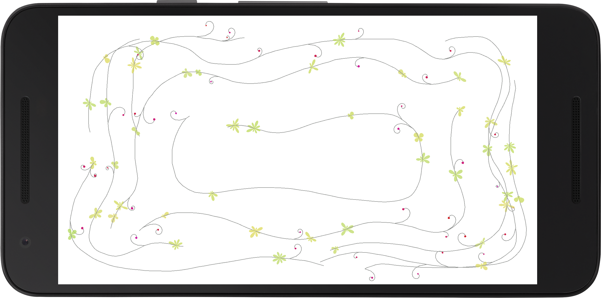
Figure 2-24. Output of the vine drawing sketch
Summary
We have now a general overview of the Processing language, and would be able to some of its functions and variables to draw shapes, set colors, apply transformations, and handle user interaction through the mouse or touchscreen. Even though we covered only a small fraction of all the functionality available in Processing, what we saw here should give us enough means to start exploring algorithmic drawing and to make our own interactive sketches and run them as Android apps.